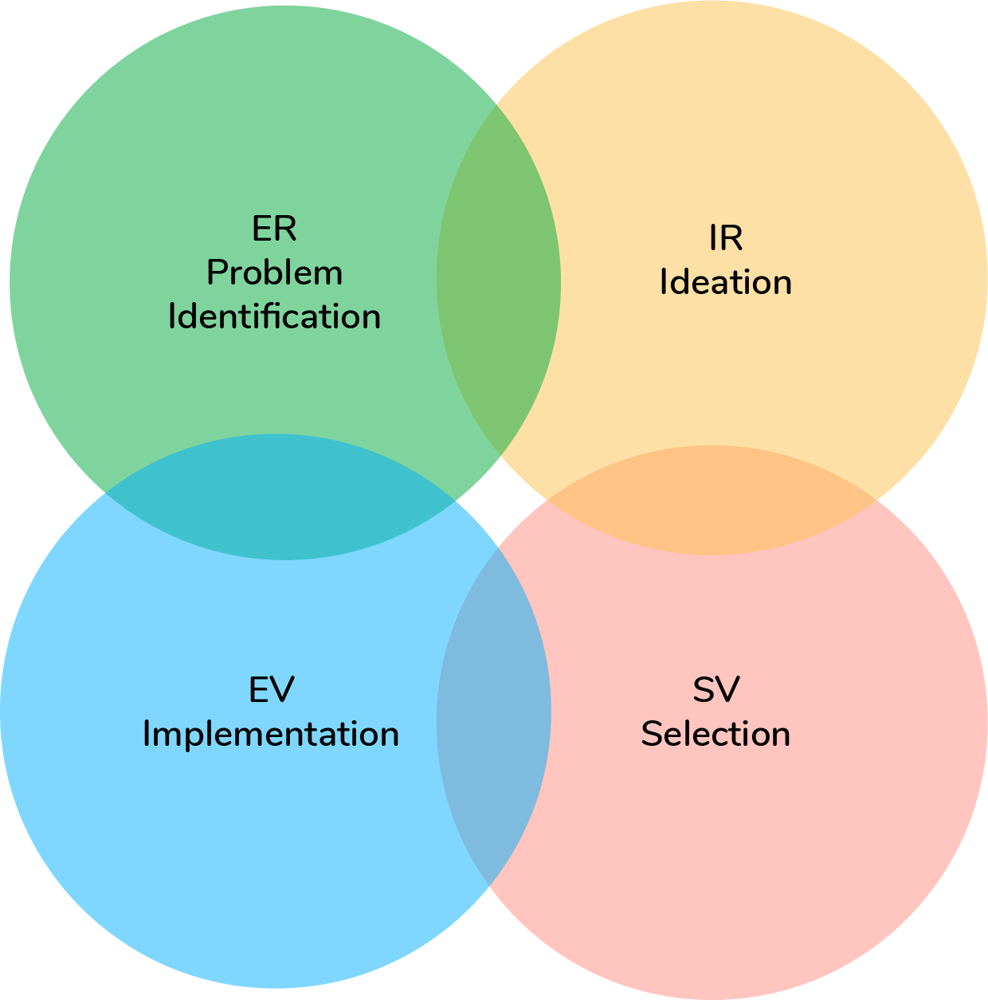

What is Designer Type Assessment?
In today’s large company, though working on the same project, different design teams, such as engineering design, industrial design, user interface design, manufacturing, and marketing, usually do their design work with different design philosophies and different design methods. The lack of understanding of each other’s design philosophy could cause difficulty in communication between teams when working for the same project, which will cause inefficiency and conflicts.
Design can be a broader classification beyond the profession. This designer type assessment measures people’s thinking patterns and working methods for solving problems. Due to the complexity and variety of solution generation, one profession can fall into different design styles.
Four Dimensions
Insight(S)/Evidence(E)
Thinking Pattern
- This dimension measures the approach a person takes when tackling questions.
- S: Tend to tackle problems with experience and intuition.
- E: Tend to tackle problems based on analysis and objective facts.
Flexible(F)/Certain(C)
Working Style
- This dimension measures how a person works with the acceptance on uncertainty.
- F: Work comfortably with unclear requirements and goals
- C: Used to working with defined guidelines and set goals
Revolutionary (R)/Evolutionary(V)
Motivation and Purpose
- This dimension measures the motivation and purpose a person has when seeking for solutions.
- R: Love starting from beginning and create things completely original
- V: Focus on improvement and develop ideas from previous works
Independent(I)/Co-creative(O)
Personal Preference
- This dimension measures the personal preference for independent work and teamwork.
- I: Feel more productive and more comfortable when working alone
- O: Feel more productive and more comfortable when working in group
The designer type assessment will be used to identify what participants’ personal design style is and how each thinks about design. This assessment will be useful in understanding the strengths that participants bring to their teams when designing solutions.
For these reasons, this assessment is designed to help participants understand each other’s design work through collaborating in an interdisciplinary team and working on a design problem together. The goal is to improve the communication between different positions to generate a harmonious and highly efficient working environment in the design process.
Designer Group Formation
Since one profession can fall into different types, there are some similarities between the 16 designer types. To provide a general view, the more similar types are classified into four groups according to the design process, including problem identification, ideation, concept selection, and implementation.
E - R - (Problem identification)
This group is evidence-driven but embraces revolutionary solutions. With an inquisitive nature, they are masters in understanding the big picture and finding opportunities to tackle ill-defined problems. They like pushing the solution along a new path instead of following an existing one.
Strengths: Explore opportunities. Important driving force for identifying problems.
Weakness: Need time to form the whole picture. Might rely too much on facts and fail to make quick moves.
S - R - (Ideation)
This group is insights-driven and loves generating new ideas. Passionate about creative activities, they are the masters in brainstorming for unconventional solutions. They let insights and experience guide their creation and push themselves hard on the originality.
Strengths: Generate creative ideas. Main force for revolutionary innovation.
Weakness: Might depend on insights too much to consider some important facts or incidentals.
S- V- (Concept Selection)
This group is insights-driven and focuses on improvements. Able to make quick decisions when facing tens of alternatives, they are masters for selecting design concepts or plans. They drive improvements through quick implementation and iteration.
Strengths: Good insights on picking creative plans. Ensure project progress.
Weakness: Might decide too fast without considering all options, and lose fairness.
E - V - (Embodiment Design /Implementation)
This group depends on evidence for implementation and improvement. They depend on solid facts and data to support the design and decisions. With a thoughtful mind-set, they are masters in embodiment and validation, and usually serve as specialists for implementing the concepts.
Strengths: Tackle difficulties and details. Ensure quality and inclusiveness.
Weakness: Might overload with information. Can be overly critical when focusing too much on details.